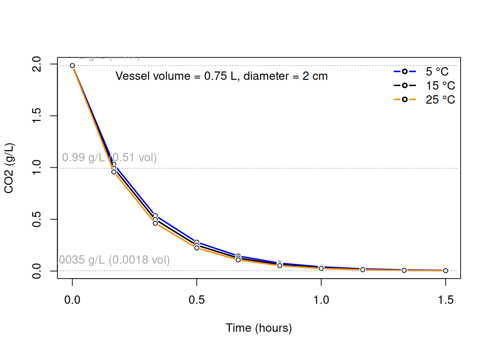
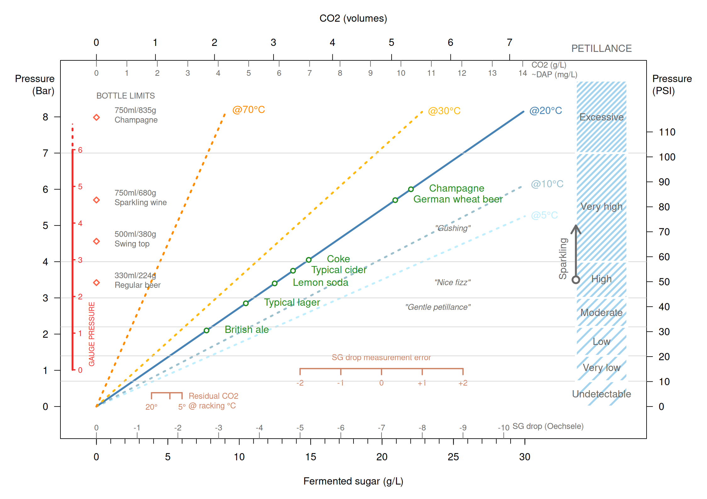

10 Kolsyrning
48g ethanol and 47g CO2 per 100g sugar
10.1 Kolsyrejäsning
Figuren nedan visar effekten av socker som tillsätts vid buteljering på kolsyrenivån och därmed trycket i flaskan.

Glöm ej att räkna in kvarvarande CO2 som finns löst i cidern efter jäsning, samt det socker som ännu ej är bortjäst (dvs skillnaden mellan aktuell SG och slutlig SG som beräknats genom slutjäsning av ett prov).
Exempel:
Omtappning från jäskärlet vid 20 °C innebär att CO2 motsvarande ca 4 g/L socker redan finns i drycken. Om aktuell SG är 1.001 (1 Oe) och slutlig SG beräknas till 0.008 innebär det en “SG drop” på 0.003 (3 Oe), vilket motsvarar ca 8.5 g socker.
Den förväntade effekten redan innan socker tillsätts vid buteljering är således motsvarande:
4 + 8.5 = 12.5 g socker
Detta ger med en serveringstemperatur på 20 °C en kolsyrenivå strax under typisk cider (ca 3.5 Bar vid serveringstemperatur 20 °C). Tillsätts 9g socker per liter blir drycken ungefär som champagne i bubblighet (6 Bar vid 20 °C).
10.2 Skingring av koldioxid
Om jäslåset tas bort och jäskärlet lämnas öppet kommer den koldioxid som finns i cidern att skingras till den omgivande luften. Hastigheten beror på storleken på vätskans yta och i viss mån på temperaturen. Nedan visas ett exempel som utgår från den mängd koldioxid som finns löst i cidern vid 15 °C och ett kärl som motsvarar en uppkorkad ciderflaska. Som kan ses halveras mängden efter ca 20 minuter. Om ytan över vilket gasutbytet sker är större sker förlusten snabbare. Vid fortgående koldioxidproduktion i musten stannar nivån vid ett något högre värde.
10.3 Notes
“A gentler mousse can be coaxed out at between four and five atmospheres.”
48g ethanol and 47g CO2 per 100g sugar
| Socker g/L | Etikett |
|---|---|
| 0-3 | Brut Nature |
| 0-6 | Extra Brut |
| 0-12 | Brut |
| 12-17 | Extra Sec |
| 17-32 | Sec |
| 32-50 | Demi-Sec |
| 50+ | Doux |
| Densitet | Socker g/L | Syfte | Risk |
|---|---|---|---|
| 3 | |||
| 6 | |||
| 8 | Disgorge | ||
| 12 | Ancestral | Överkarbonering | |
| 18 | |||
| 32 | |||
| 40 | 85 | ||
| 50 | 111 | ||
| 100 | 238 | ||
Alternativ vid stabilisering vid högre SG: 10 ppm DAP plus 5 ppm dry yeast för att få lagom karbonering (CJ).
Kolsyrejäsning 4-5 poäng ger “nice fizz”, 6p nära “gushing”.
10 g/L sugar gives 5g/L CO2 which at 15C will give you 1.5 bar pressure which is a gentle petillance. (Depends somewhat on how much CO2 is left in solution from the primary yeast fermentation.). If you drink it from the fridge at 5C it will give you less than 1 bar pressure.
“normal Ancestral method where the cider is bottled at a SG of typically 1.012 to 1.014, and it stops around 1.007 to 1.010. And since I like the cider to be well clarified prior to bottling, I get very little sediment in the bottles - for me it is not worth the trouble to go through the disgorgment process. I would strongly recommend you do a keeving of your juice prior to fermentation, as this will help a lot in stabilizing the fermentation and preventing excessive in-bottle refermetnation.”
If you bottle at 1.010 and your cider ferments to dry then you might just about get away with it but any higher and you will probably end up over carbonated. If you just want a dry cider and you are planning to disgorge then just ferment to about 1.008-1.009 before bottling.
Claude: ” aim for a drop of 4 to 5 SG points in bottle to obtain a nice fizz. It can be a bit more - 6 points gives more sparkle, but is getting close to the limit where you start to have some gushing at opening.
As of the ideal SG at bottling, it depends on if you want a bone dry cider or one that retains some residual sugar. For my part, I like my ciders to finish at around SG 1.006 to 1.008. Hence I’ll bottle at around 1.010 to 1.012. For this I’ll make sure the cider is well stabilized at that SG by doing rackings until the nutrients are exhausted. I also want the cider to be well clarified as to minimize the amount of deposits in the bottle, and I may do a fining (same Chitosan and Kieselsol) if necessary. I don’t add sugar, but I do add a micro-dosage of DAP and/or dry yeast. For example, 10 ppm DAP plus 5 ppm dry yeast usually works fine to provide just the right fizz and not too much.”
Champagnecider kan buteljeras vid SG30
“From the UC Davis course”Introduction to Winemaking”: The amount of sugar that is added will determine both the final CO2 pressure and the amount of additional alcohol that will be produced. (Approximately 1 atmosphere of pressure will be generated by 4g of sugar per liter). Thus to produce 6 atmospheres of CO2 will require 24g sugar per liter of wine. This much sugar will result in an additional 1.3% alcohol (2.4% sugar x 0.55).” https://www.homebrewtalk.com/threads/how-to-calculate-the-final-psi-for-sparkling-drinks.28332/ One volume means that 1 liter of CO2 is dissolved in 1 liter of beer. one atmosphere nearly equal to one bar